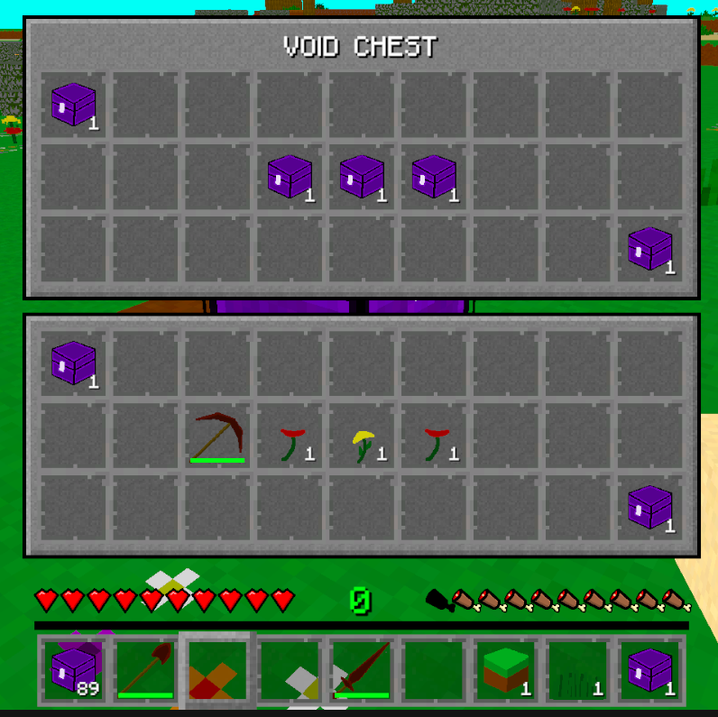
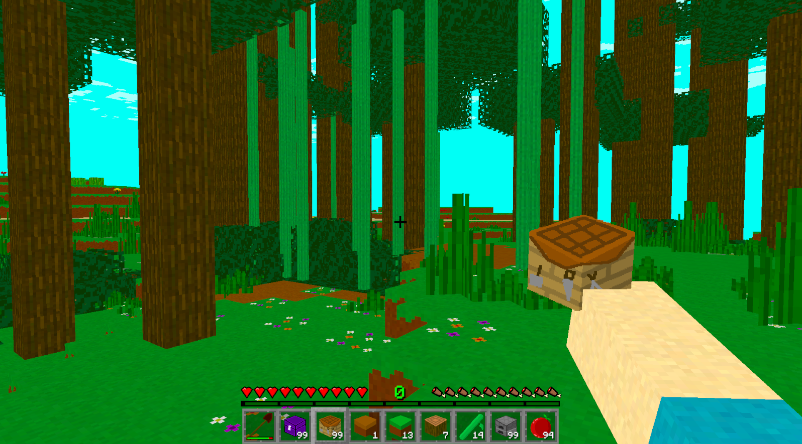
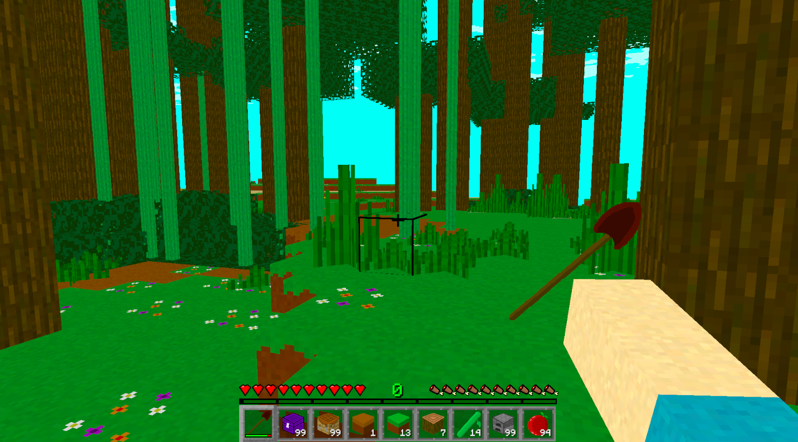
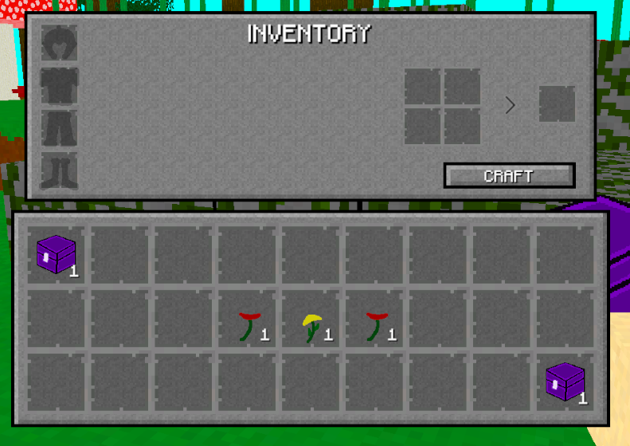
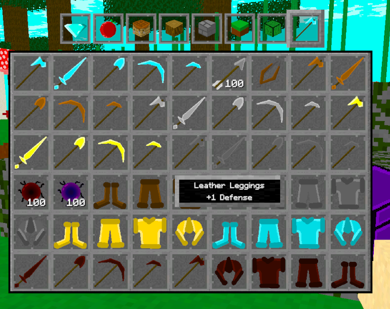
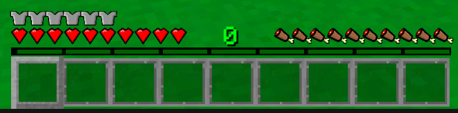
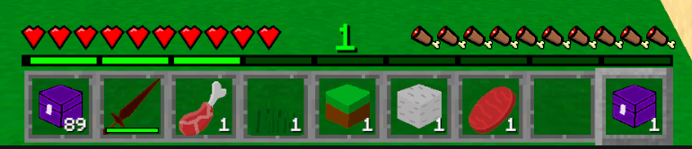
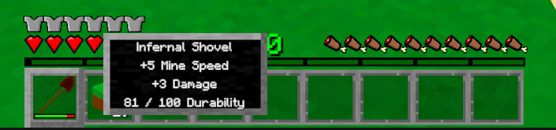

Devlog Sixteen Overview
With the release of this devlog update, I am now dramatically closer to releasing the Alpha 1 version of the game. There wil be a lot of stuff missing from that version, but the essence of the game will be there. This devlog update completed a lot of essential stuff related to gameplay and saving.
Main Features
The first feature I'm going to talk about is the Void Chest. The player can store items in it, and it will all get saved. So now not all items have to be stored in the player's inventory. The Void Chest is basically my version of the Ender Chest from Minecraft. By the way, I was going to add regular chests to Alpha 1, but I don't want to encourage storing a bunch of items in a version that will quickly get replaced. I actually took chests out of the game for Alpha 1. They'll get added back in when the game is on a proper version of itself.

For the next feature, let's take a look at something cool: the player hand. That's a thing now. And it'll also show the item the player is currently holding. Which right now is just the item icon displayed in the hand. This looks really funny when holding a weapon or tool.


Now onto the player's inventory. For a little user friendliness, I gave the armour slots a background image of the armour that's supposed to go in that slot. Just to help the player understand where each type of armour is supposed to be equipped.

Speaking of armour, I added another useful feature related to them for player's conveinence. The item info pop up will now display their defense rating.

The defense rating is the next feature I'll talk about. When the player equips armour, it'll add to the total defense points the player has. So a chestplate might have three points, and the leggings two points. That'll be five. For every five points of defense, there is a chance of removing a point of incoming damage. So having really good armour can seriously help the player take a lot less damage overall. And the number of total defense points is displayed on the screen with little icons.

Now let's talk about the experience bar. Basically it fully works now. The player can earn experience by killing mobs and enemies, and level up. This of course all saves as well.

There is only one more feature to talk about. Armour and tools now have durability. So when the player crafts a wooden pickaxe, it will slowly get destroyed when mining away. And when the player gets attacked, the player's armour will take a point of durability. The current durability of an item will also get displayed on the item info pop up as well.

Blocks
I can't believe I'm saying this, but there is no new blocks or items in this devlog update. I'm trying really hard not to add more stuff until I get more of the actual game done. I'm proud of myself for this.
Conclusion
Because of this devlog update, the game is getting so close to the Alpha 1 release. There's still a few more items on the list that I want to complete before that point though. But this devlog update knocked out quite a few tasks for this. Like the experience bar, durability, and armour having a purpose.
I have no idea what the next devlog update will be centered around, but I know I will try to knock out some more important tasks in that update as well.